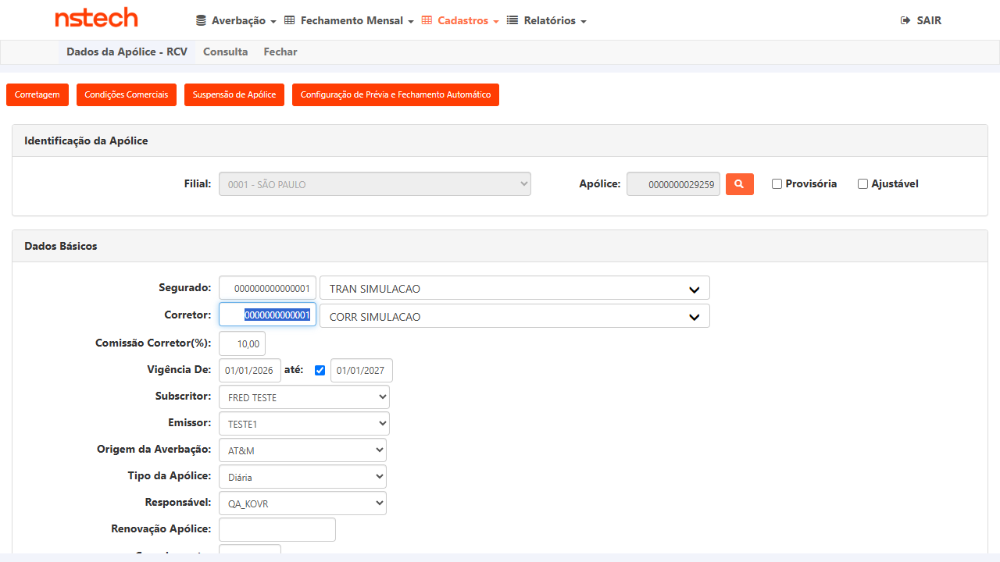
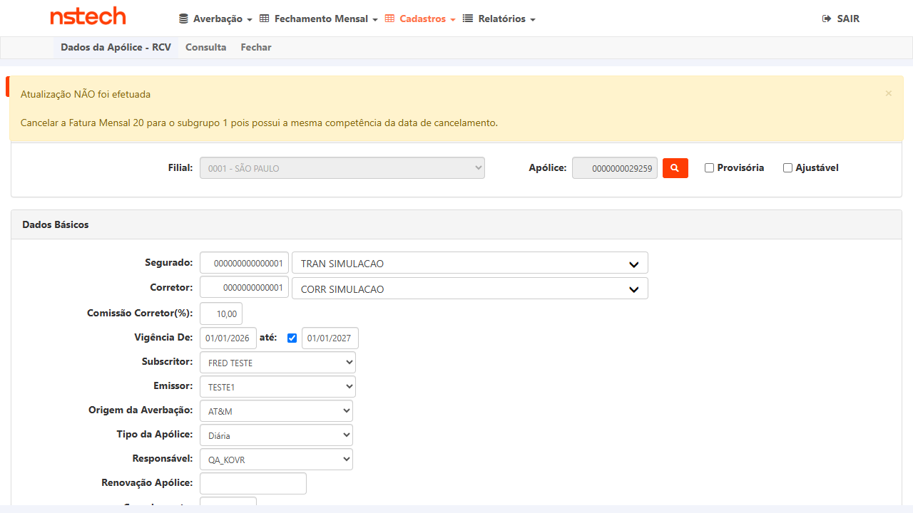
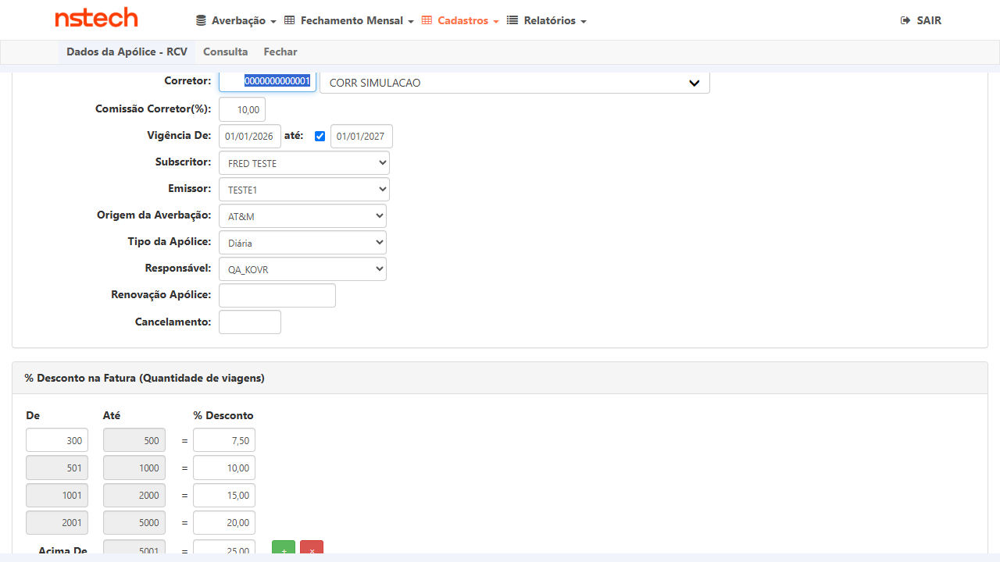
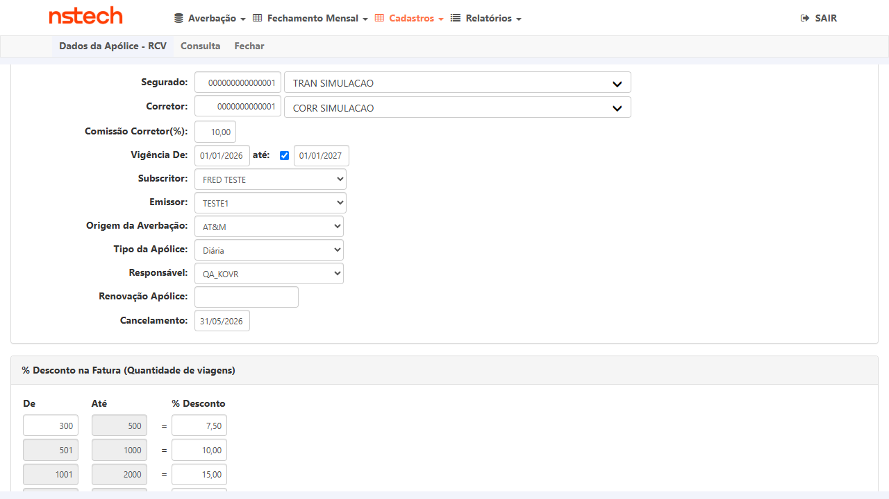
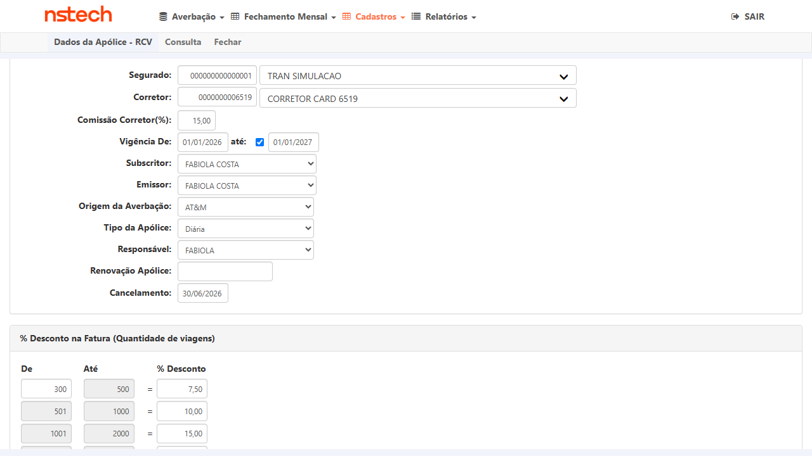

1. Contexto e Regra de Negócio
Problema anterior: Ao cancelar uma apólice com data de cancelamento
dentro de um mês que possuía fatura mensal fechada (emitida), o sistema bloqueava o
cancelamento independentemente de qual dia do mês era. Isso impedia o cancelamento
legítimo no último dia do mês ("regra das 24 horas" do SLA de Análise de Produção).
Comportamento corrigido (PBI #6719):
- Cancelamento no último dia do mês + fatura fechada na mesma competência → LIBERA
- Cancelamento em dia que NÃO é o último do mês + fatura fechada → continua BLOQUEANDO
- Cancelamento sem fatura fechada para a competência → LIBERA (sem alteração)
Escopo: Esta alteração se aplica a todos os ramos do módulo Nacional
(RCTR-C, RCTA-C, RCTF-C, RCA-C, RCV, Transporte Nacional). Validação executada no ramo
RCV (59) — KOVR HML.
Status da PR: Build HML V 1.0.260602.1734 — PR Main #7293 estava como
"To Do" no Azure DevOps. Fix validado no build atual; se os testes reprovarem em outro
ambiente, acionar o dev para verificar o merge da PR.
2. Massa de Dados
| CT | Apólice | Segurado | Filial | Ramo | Vigência | Fatura Fechada | Data Cancelamento Testada |
|---|---|---|---|---|---|---|---|
| CT-001 | 0000000029259 | TRAN SIMULACAO | 0001 SÃO PAULO | 59 / RCV | 01/01/2026 – 01/01/2027 | Fatura nº 20 — ref. 05/2026 (emitida 08/06/2026) | 30/05/2026 |
| CT-002 | 0000000029259 | TRAN SIMULACAO | 0001 SÃO PAULO | 59 / RCV | 01/01/2026 – 01/01/2027 | Fatura nº 20 — ref. 05/2026 (emitida 08/06/2026) | 31/05/2026 (último dia) |
| CT-003 | 0000000201059 | TRAN SIMULACAO | 0001 SÃO PAULO | 59 / RCV | 01/01/2026 – 01/01/2027 | Sem fatura de junho/2026 fechada | 30/06/2026 |
3. Cenários de Teste
| # | Passo | Resultado Esperado | Resultado Obtido |
|---|---|---|---|
| 1 | Logar em KOVR HML com VOIDR-NS / NS-VO1DR | Acesso ao módulo Nacional | ✓ OK |
| 2 | Cadastros → Apólice → RCV | Formulário Dados da Apólice - RCV | ✓ OK |
| 3 | Buscar apólice 29259 pela lupa | Apólice carregada, vigência 01/01/2026–01/01/2027, sem cancelamento | ✓ OK |
| 4 | Preencher campo Cancelamento com 30/05/2026 | Data preenchida no campo | ✓ OK |
| 5 | Clicar em Atualizar | Sistema exibe mensagem de bloqueio informando que há fatura fechada na mesma competência | ✓ BLOQUEOU conforme esperado |

PRÉ Apólice 29259 carregada — ativa, sem cancelamento

PASS Mensagem de bloqueio visível — cancelamento em 30/05/2026 com fatura 05/2026 fechada
| # | Passo | Resultado Esperado | Resultado Obtido |
|---|---|---|---|
| 1–3 | Login + navegação + apólice 29259 (mesmo fluxo CT-001) | Apólice carregada, vigente, sem cancelamento | ✓ OK |
| 4 | Preencher campo Cancelamento com 31/05/2026 | Data preenchida no campo | ✓ OK |
| 5 | Clicar em Atualizar | Sistema aceita e exibe mensagem de sucesso; campo Cancelamento fica salvo com 31/05/2026 | ✓ LIBEROU — "Atualização dos dados efetuada com sucesso" |

PRÉ Campo Cancelamento vazio — apólice ativa antes do teste

PASS Campo Cancelamento salvo com 31/05/2026 — fix liberou corretamente
| # | Passo | Resultado Esperado | Resultado Obtido |
|---|---|---|---|
| 1–3 | Login + navegação + apólice 201059 (vigência 01/01/2026–01/01/2027, ativa) | Apólice carregada, sem cancelamento | ✓ OK |
| 4 | Preencher campo Cancelamento com 30/06/2026 | Data preenchida | ✓ OK |
| 5 | Clicar em Atualizar | Sistema libera — nenhuma fatura de junho fechada para esta apólice | ✓ LIBEROU — "Atualização dos dados efetuada com sucesso" |

PASS Apólice 201059 — campo Cancelamento salvo com 30/06/2026 (sem fatura de junho fechada)
4. Conclusão
✓ Fix validado — 3 de 3 cenários PASS
- CT-001: Bloqueio mantido para cancelamento antes do último dia com fatura fechada — regressão OK
- CT-002: Fix liberando cancelamento no último dia do mês com fatura fechada — novo comportamento correto
- CT-003: Cancelamento sem fatura na competência continua sendo liberado — sem impacto lateral
Mensagem de bloqueio confirmada (comportamento existente mantido):
"Atualização NÃO foi efetuada — Cancelar a Fatura Mensal [N] para o subgrupo [N] pois possui a mesma competência da data de cancelamento."
Observação: Validação executada no ramo RCV (59). Conforme instrução do usuário,
o fix se aplica a todos os ramos (RCTR-C, RCTA-C, RCTF-C, RCA-C, Transporte Nacional).
Recomenda-se regressivo nos demais ramos se houver massa disponível.